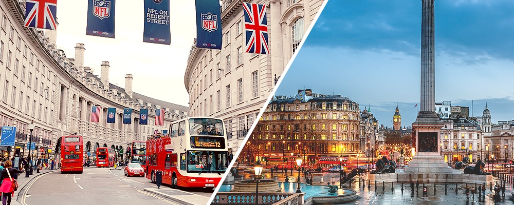

Taj 51 Buckingham Gate Suites and Residences
Victoria, London, England
Location
On an exclusive street that also features several diplomatic missions, The Britain-Australia Society, the Wellington Barracks, the headquarters for Rolls-Royce — and Zander, Europe’s longest cocktail bar (try the bank blazer with Venezuelan rum). Buckingham Palace is six minutes’ walk; both Green Park and St James’s Park are 10. The Houses of Parliament and Westminster Abbey are the same distance away. Victoria Station is 11 minutes’ walk.
Style & Character
No other luxury London hotel can rival the rags-to-riches story that frames this formidable five-star. In Elizabethan times, a distant relation of Anne Boleyn established it as an almhouse for the poor. The 19th century saw military-man-turned-architect Major Charles Pawley transform it into a pied-à-terre for nobility. By the turn of the next century, history was being made in its conspiratorially echoey marble corridors and wood-cladded rooms: it is said that Winston Churchill would discuss matters of state here while swilling a glass of claret and sucking on a Havana cigar.
Much of its original architecture remains. All of the hotel buildings are arranged around a central courtyard where wafish nymphs hold up the neoclassical pediments; and grim-eyed satyrs support the archway-fringed balconies. Part of the brickwork is tiled with a startling Shamrock-green glaze, and there’s a wonderful outdoor frieze carved from the brickwork depicting Shakespeare plays.
Expect interiors with pizzazz — from the Kona dining room with peacock wallpaper and mosaic-print floors, to the lounge with gold textured walls and bowls of hot pink flowers strewn about. You are also compelled to slow down through the hallways here, which host 19th-century society oil paintings by Belfast-born Sir John Lavery — think gentlemen with stiff collars, and ladies with doe eyes and oversized hats.
Service & facilities
Service is confident. The female members of the team float around in silk neck scarves, and the men stride through the corridors in suits tailored on Jermyn Street. Their manner is exuberantly friendly, without the simulated sycophantry that plagues many five stars.
Facilities include three restaurants, a spa with steam room and sauna, a gym, a business centre, a private off-street entrance and a lounge. The library, with its soft grey furnishings and collection of antique compasses and globes, is a wonderful place to linger with a book. If you’ve neglected to bring your own, choices here range from Angolan histories to a guide to the gardens at Buckingham Palace.
- ✔ Bar
- ✔ Fitness centre
- ✔ Laundry
- ✔ Parking
- ✔ Restaurant
- ✔ Room service
- ✔ Sauna
- ✔ Spa
- ✔ Steam room/hammam
- ✔ WI-FI
Rooms
This is a suites-only hotel. All are spacious, with affection for contrasting textures, and colourful but considered interior design. Think cherry-pink walls, silver leather bedheads, artisan rugs, and fleshy, expensive silks. There are nods to British designers — bespoke furniture by Thomas Interiors, and quirky lamp fixtures by a Birmingham-based family business called Chad Lighting.
They feature kitchens, which are all state-of-the-art, with coffee machines, ovens and hobs. A microwave would have been handy, but I appreciated the full stock of Tetley tea (the hotel is owned by Indian Tata Group after all), and two bottles of fresh milk in the fridge.
Food & Drink
Is this home to the best Indian restaurant in London? The seafood tasting menu at Michelin-starred Quilon was the culinary equivalent of romping through a glowing spice field on a fish-bloated stretch of Indian coast. The spicy broth, swimming with shards of coriander and plump scallops, had me in an aromatic stupor. The two gutsy main flavours in the lobster dish — butter pepper and garlic — played tag with each other in the mouth. Biryani often collapses into an ingrediential free-for-all, but the seafood offering here had a terse, instrumental minimalism that would make Ernest Hemingway proud — no one element was gratuitous, from the al dente beans that provided a haven of coolness in a bowl crackling with spice, to the supersized prawns that delivered the main goods, and the pomegranate seeds that gave sweetness and crunch.
Breakfast is a high-end affair to which the men wear chinos and the women sport ruthlessly-engineered flyaway hair. À la carte options include the usual, but also Loch Fyne kippers, pancakes and waffles, and an Indian 'dish of the day'.
Price
Rooms from £275, including breakfast. A lot of money, but consider what you are paying for: a gleaming pied-à-terre in a building of historic significance, which is down the road from Buckingham Palace. And your own temporary London pad also comes with complimentary access to a gym, spa, business centre, 24-hour security — plus a gourmet breakfast, and pre-dinner drinks and canapés thrown in. Free Wi-Fi.
Guests with disabilities
One adapted suite.
Address
1 Buckingham Gate, London SW1E 6AF, England.
020 7769 7766
taj51buckinghamgate.co.uk